Galeri
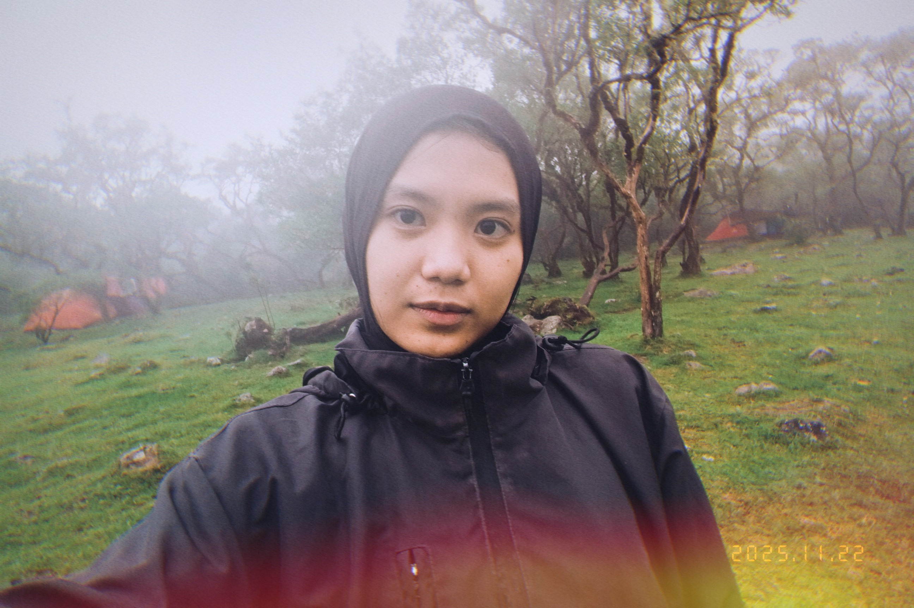
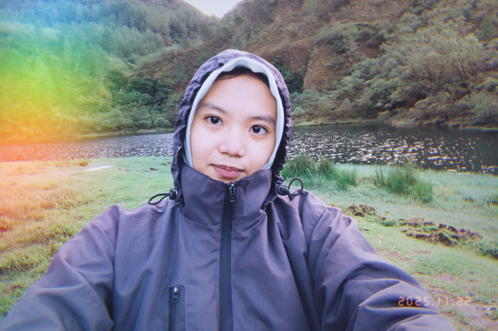
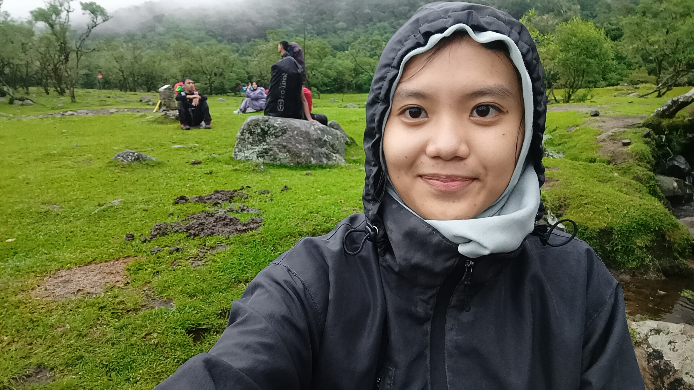
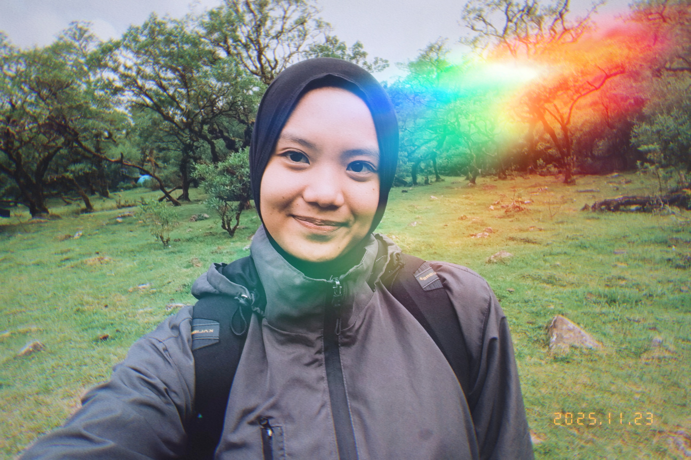
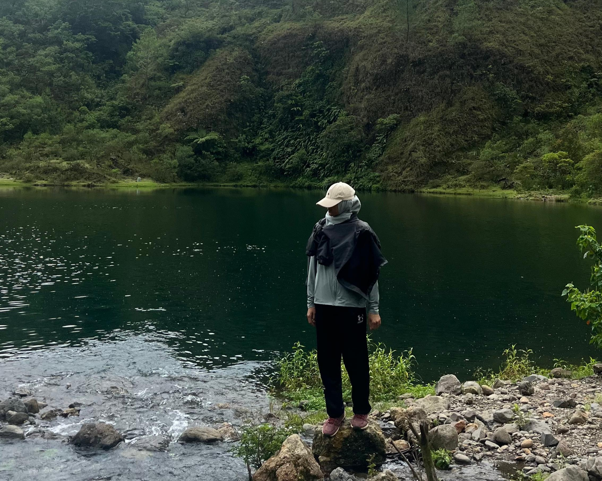

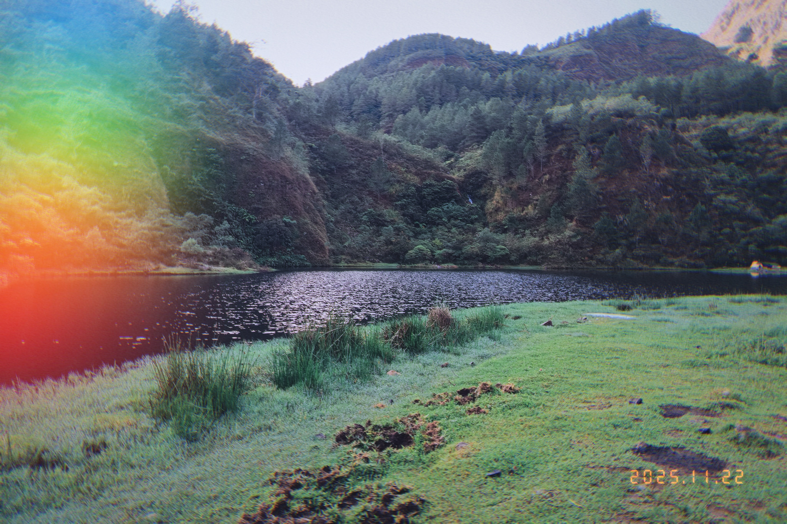
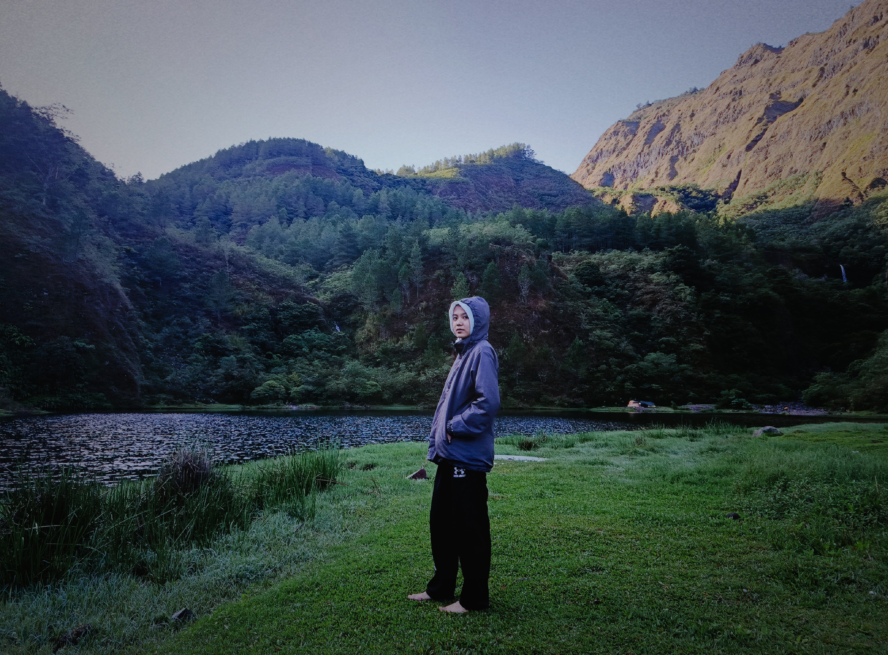
Di mana kabut pagi, aliran sungai, dan hamparan hijau bertemu dalam satu panorama.
Jelajahi Sekarang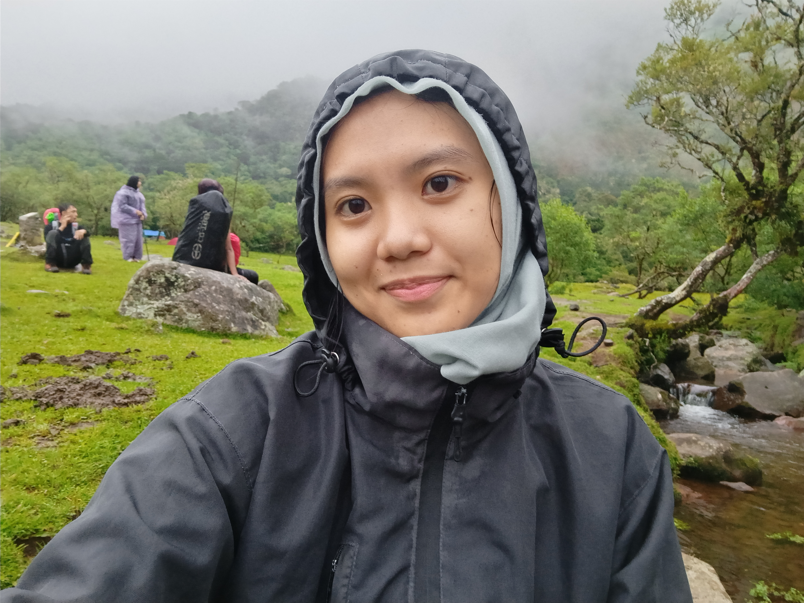
Terhampar di tengah lanskap hijau yang menawan, Lembah Lohe menawarkan panorama alam yang memadukan kesegaran, ketenangan, dan keindahan dalam satu ruang. Dengan perbukitan yang bergelombang dan langit yang terbuka luas, tempat ini menjadi pengingat bahwa alam sering kali menghadirkan pesona terbaiknya tanpa perlu banyak kata.
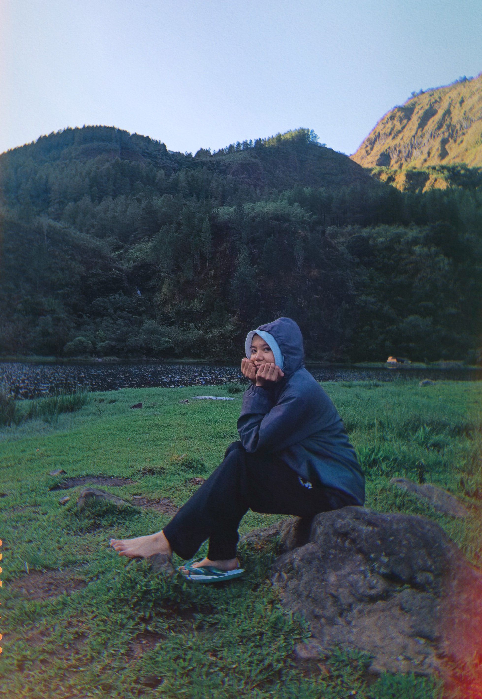
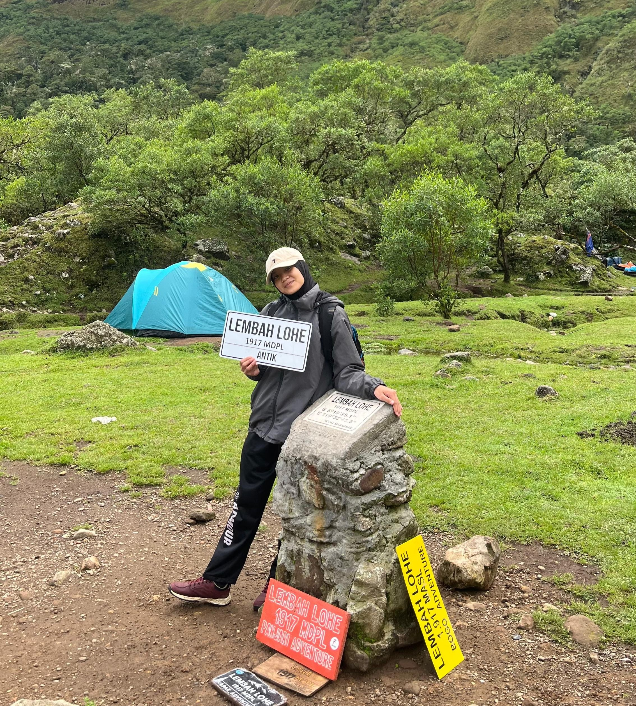
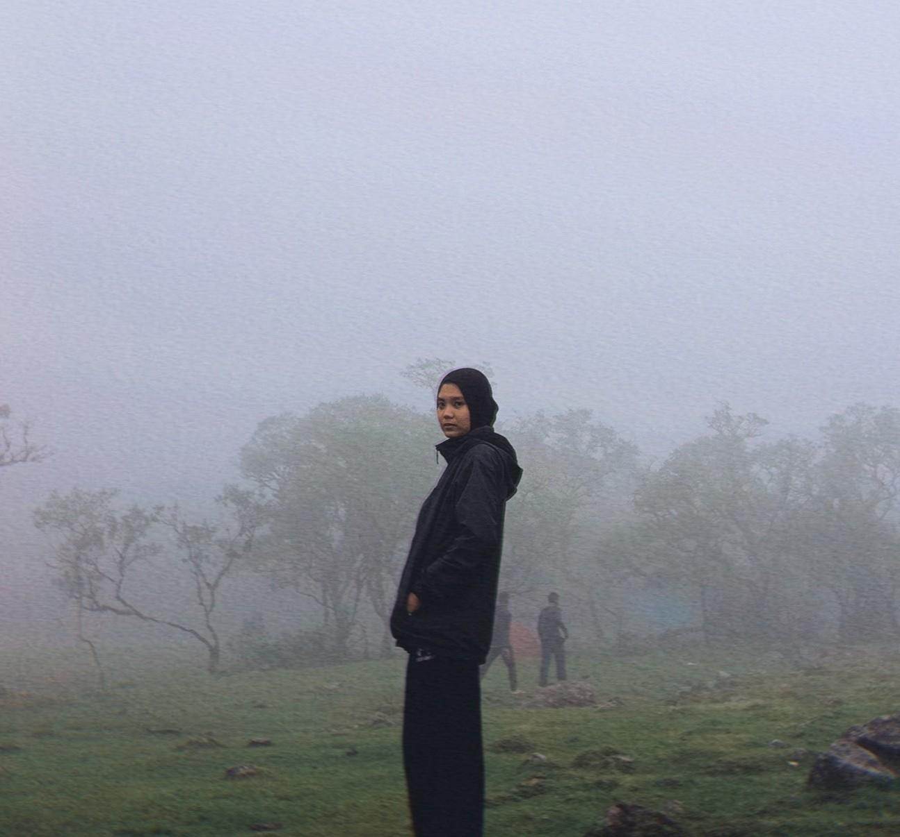
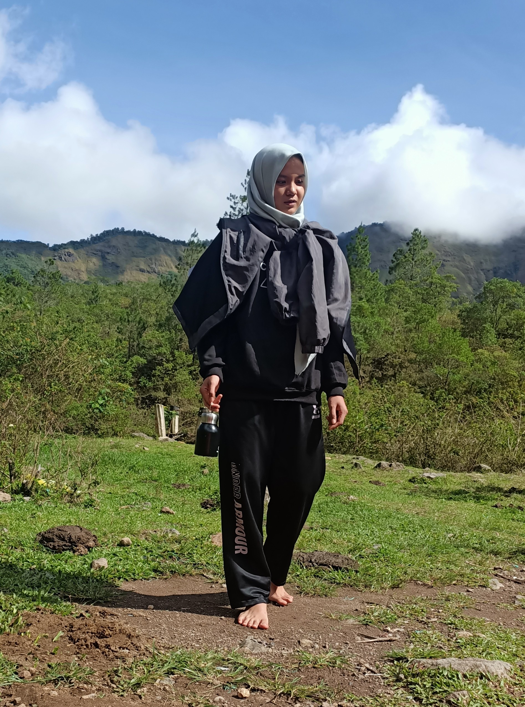
Geser ke samping untuk melihat lainnya →





